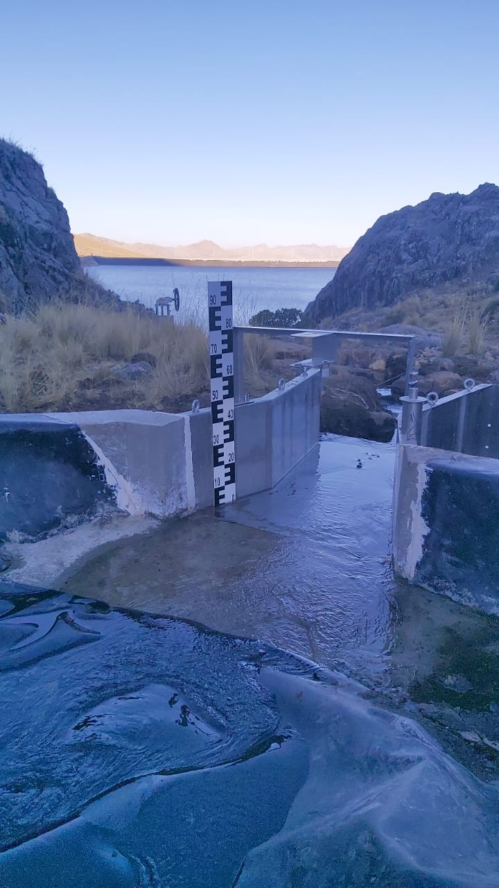

Projects
Balloon Mosaic Tool
#RemoteSensing #Python #Backend #DataScience

AEROLab
#RemoteSensing #Flask #Frontend #Backend

Advanced geospatial intelligence platform
#RemoteSensing #Backend #SQL #PostGIS #ApacheSedona #Dagster

Precipitation Downscaling Modelling
#RemoteSensing #GIS #Hydrology

Hydrometric Station Chuspiri
#Hydrometry #Hydrology #GIS #Telemetry
Hydrometric Station Clarification Dam
#Hydrometry #Hydrology #GIS #Telemetry
Automatic Water Quality Monitoring
#Hydrometry #Hydrology #GIS #Telemetry